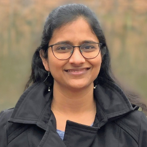

Tejaswini Pedapati
Senior Research Software Engineer — IBM TJ Watson
Senior Research Software Engineer specializing in post-training, LLM safety, model compression, and AutoML. Contributed to Granite Guardian guardrail models, led LLM pruning and RL-based alignment research, published at ACL, NeurIPS, ICML, and Nature Communications, and was instrumental in multiple million-dollar client engagements.

Research
Post-Training & LLM Safety
Guardrail models for detecting toxicity, bias, jailbreaking, and hallucinations. Contributed to Granite Guardian — topped GuardBench, ranked 3rd on LLM Aggrefact.
Efficient LLMs
Pruning and distillation algorithms reducing inference latency by 9% and memory by 17%. Training data selection and knowledge distillation achieving 10× speedups.
AutoML
Architected IBM's Neural Architecture Search framework. Meta-learning-based early stopping improved search efficiency by 100× across image and text domains.
Education
- M.S. Computer Science (NLP & ML) — Columbia University, 2013
- B.Tech Information Technology — PSG College of Technology, India, 2008